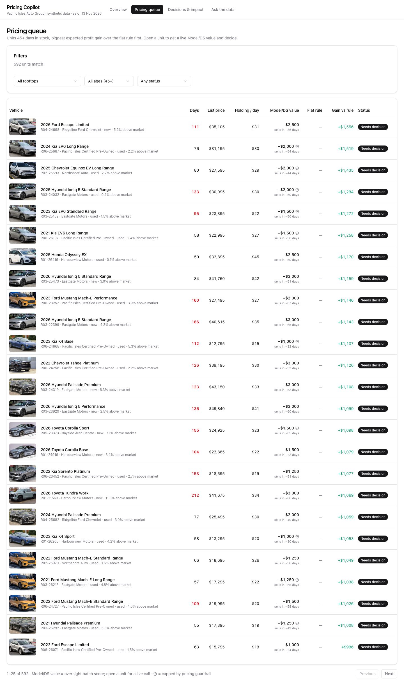
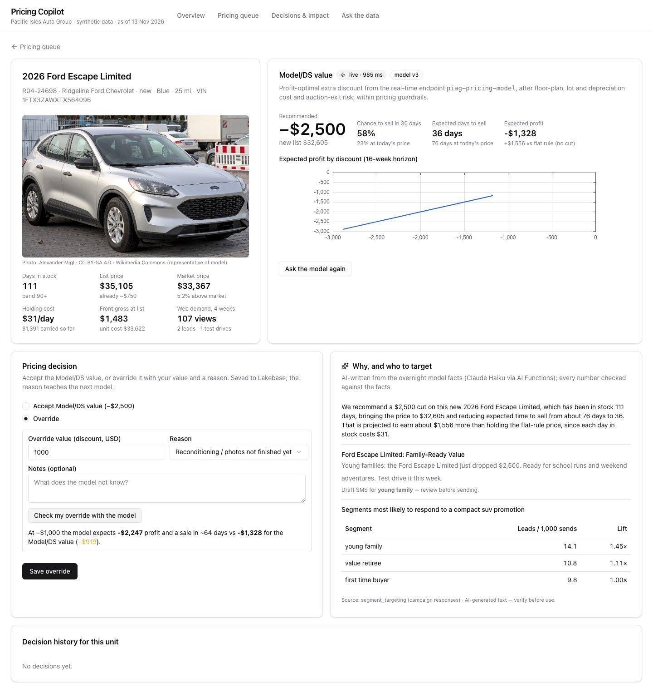

A pricing copilot that tells your pricing managers which units to cut, by how much and who to target — in seconds — and learns from every override.
| Policy (same 1,411 units, same buyers, 20 simulated futures) | Net profit (120 days) | Aged 90+ at day 60 | Carrying cost | Auction exits | Retail units |
|---|---|---|---|---|---|
| Flat rule ($250 @ 45 d / $500 @ 90 d) | $1,639,152 | 291 | $823,761 | 192 | 1,007 |
| Pricing copilot (model + your guardrails) | $1,719,425 | 186 | $642,102 | 98 | 1,194 |
| Model without guardrails | $1,708,745 | 183 | $626,393 | 91 | 1,206 |
How: the copilot spends discount where it buys speed (393 aged units get a cut, avg $845) and holds price where it does not (199 aged units). Guardrails make it better, not just safer (+$80k vs +$70k unconstrained). Annualised ≈ $240k for this lot — validate in a pilot before quoting.

Pricing queue: every 45+ day unit, Model/DS value vs flat rule, expected gain, decision status

Vehicle: live Model/DS value; override value + reason, checked against the model before saving
"This new 2026 Toyota Corolla Limited has been in stock 237 days and is priced 4.8% above market, so a $2,000 cut to $23,600 is recommended. The cut is expected to shorten time to sale from about 86 days to 39 and earn about $1,773 more than the flat-rule approach."
First-time buyers respond 2.4× better to compact-car offers. "First car? The Toyota Corolla Limited is now $2,000 off. Come see a new car built for your first road trips. Book a test drive today."
Override example recorded in the app: manager cut $1,000 instead of $1,500 ("customer already negotiating") — the model showed the override was worth $548 less before it was saved.